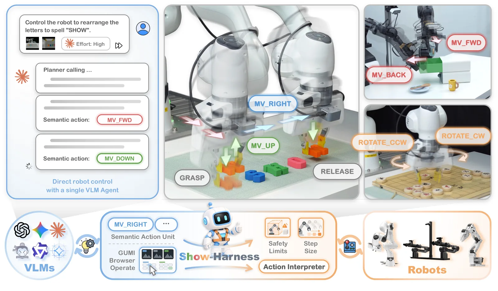
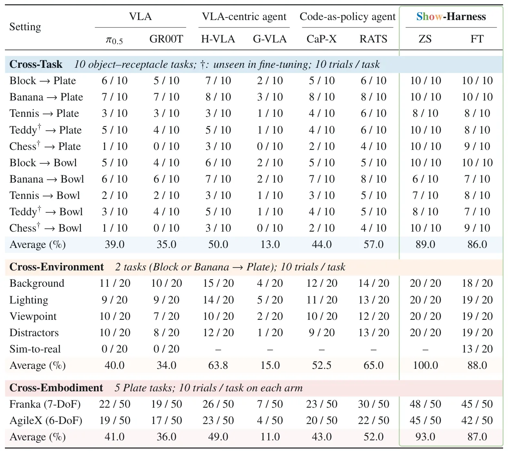
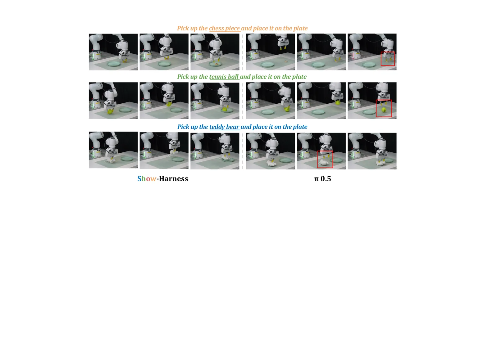

O problema da inteligência que não se move
Modelos de visão-linguagem (VLMs) como GPT-4V e Gemini já reconhecem objetos, entendem relações espaciais e decompõem tarefas complexas em etapas. Mas essa inteligência não se traduz facilmente em controle robótico. A abordagem dominante hoje são os modelos vision-language-action (VLA): você pega um VLM e o ajusta fino para regredir ações contínuas específicas de um robô — posições do efetuador, ângulos das juntas, abertura da garra. O problema é que isso colapsa todo o conhecimento semântico do modelo em um mapeamento opaco de pixels para atuadores, exigindo re-treinamento para cada tarefa, ambiente ou robô novo.
A alternativa hierárquica mantém o VLM no topo, gerando planos ou código que invocam controladores de baixo nível. Funciona, mas o VLM perde contato direto com o mundo físico: ele delega a execução para APIs ou módulos intermediários, enfraquecendo a ligação entre intenção semântica e ação física. O Show-Harness, proposto por Chen e colegas, argumenta que o gargalo não está na capacidade dos modelos, mas na interface: falta um espaço de ações que seja ao mesmo tempo semanticamente natural para o VLM e granular o suficiente para controle físico direto.
A proposta é um 'Embodied Harness' — uma camada de tradução modelo-agnóstica que expõe ao VLM um conjunto discreto de unidades de ação semânticas. Cada unidade especifica um único passo de movimento em uma direção ou uma ação da garra, interpretável diretamente pelo modelo. Um interpretador específico do robô então traduz deterministicamente cada unidade em um movimento físico pequeno e limitado. O VLM raciocina em um espaço que entende nativamente, mas permanece diretamente responsável por decisões físicas de granularidade fina.

Duas rotas para o mesmo espaço de ações
O Show-Harness habilita dois modos de controle. Primeiro, modelos de fronteira fechados (como Gemini-3.1 Pro) podem controlar robôs em zero-shot, sem nenhum ajuste fino. Segundo, VLMs pequenos de código aberto (por exemplo, modelos de 2 bilhões de parâmetros) podem ser adaptados com apenas algumas horas de GPU para operar no mesmo espaço de ações, alcançando generalização mais forte e melhor transferência simulação-real que VLAs representativos em experimentos controlados.
A interface é interpretável e diretamente operável tanto por humanos quanto por modelos. Isso permite unificar agentes VLM com coleta de demonstrações via GUI: os autores desenvolveram GUMI (GUI Manipulation Interface), que estende o mesmo espaço de ações semânticas para coleta de demonstrações baseada em navegador, permitindo que humanos e agentes 'joguem' robôs através de corporificações sem hardware de teleoperação especializado, com reutilização natural entre diferentes robôs e coleta colaborativa de dados.

Anatomia da interface semântica
O núcleo do Show-Harness é o espaço de ações discretas. Em vez de regredir vetores contínuos de 7 ou 14 dimensões (para braços únicos ou duplos), o VLM escolhe entre ações como 'mover para frente 2cm', 'mover para cima 2cm', 'fechar garra', 'abrir garra'. Cada ação corresponde a um movimento atômico, pequeno e limitado. O interpretador específico do robô — uma camada determinística, não aprendida — traduz essas unidades em comandos de baixo nível: cinemática inversa para braços manipuladores, controle de torque para garras.
Essa discretização tem três consequências importantes. Primeira: o VLM raciocina em termos que correspondem diretamente à linguagem natural ('mova para a esquerda', 'desça um pouco'), não em coordenadas cartesianas ou ângulos de junta. Segunda: cada decisão do VLM resulta em um movimento físico observável, fechando o loop de percepção-ação em granularidade fina. Terceira: a mesma interface funciona para diferentes robôs, desde que cada um tenha seu interpretador — o VLM não precisa saber quantas juntas o braço tem ou qual é a cinemática específica.
Ao redor desse núcleo, o harness organiza o contexto perceptual: imagens de múltiplas câmeras (exocêntricas e de pulso), estado proprioceptivo (posição do efetuador, abertura da garra), histórico recente de ações. Suporta raciocínio sobre subtarefas e recuperação de falhas. Retorna feedback de execução após cada unidade, transformando VLMs digitais em agentes situados que raciocinam e agem em um espaço semântico que entendem nativamente, mas permanecem diretamente responsáveis por decisões físicas de granularidade fina.
Configuração experimental e dados
Os experimentos usam duas plataformas robóticas reais. A primeira é um braço Franka Research 3 de 7 graus de liberdade com garra paralela, observado por uma câmera Intel RealSense D435 voltada para o workspace e uma D405 montada no pulso (duas visões). A segunda é um rig bimanual AgileX com dois braços de 6 DoF, observado por três câmeras Orbbec Dabai DC1: uma visão egocêntrica compartilhada e uma visão de pulso por braço. Modelos locais rodam em uma única GPU RTX 5090; modelos de fronteira são acessados via API.
Os autores constroem dez tarefas de manipulação real pareando cinco objetos com dois receptáculos-alvo (um prato e uma tigela). Cada tarefa exige localizar, aproximar, agarrar, transportar e posicionar apropriadamente. Os objetos cobrem propriedades físicas diversas: geometria rígida (bloco), forma irregular (banana), dinâmica de rolamento (bola de tênis), deformabilidade (ursinho de pelúcia) e manipulação de precisão (peça de xadrez). Para VLMs de código aberto ajustados fino, apenas bloco, banana e bola aparecem nas demonstrações; ursinho e peça de xadrez ficam fora da distribuição (OOD) para avaliar generalização.
As demonstrações são coletadas via GUMI usando controle humano por teclado e rollouts de VLMs de fronteira pela interface de navegador. No total, 164 episódios reais (7.800 passos de decisão) sob translação compartilhada de 2cm: 101 episódios no Franka de 7 DoF (5.000 passos), 63 episódios no AgileX de braço único (2.800 passos). Cada episódio tem no máximo 50 passos; timeouts contam como falhas. Reportam taxa de sucesso e passos médios por episódio, com 10 tentativas por tarefa e posicionamento aleatorizado dos objetos.
Baselines: três famílias de controle
As comparações cobrem três paradigmas representativos. Primeiro, VLAs puros: π0.5 e GR00T mapeiam diretamente observações e instruções para ações contínuas de baixo nível. Para comparação controlada, ambos são ajustados fino em trajetórias contínuas do efetuador convertidas das mesmas demonstrações usadas para treinar a política VLM do Show-Harness.
Segundo, agentes centrados em VLA: Harness VLA e Goal-VLA mantêm um VLA como executor físico principal, mas adicionam uma camada agêntica externa para planejamento, monitoramento ou intervenção. Terceiro, agentes code-as-policy: CaP-X e RATS traduzem raciocínio de alto nível em programas executáveis ou chamadas de API, delegando controle físico para controladores downstream ou mecanismos específicos do sistema.
Para o modo zero-shot (ZS), o Show-Harness usa Gemini-3.1 Pro por padrão, com 'thinking effort' médio (orçamento de raciocínio em tempo de inferência). Para o modo fine-tuning (FT), usam Qwen3.5-2B com adaptadores LoRA de rank 64 em todas as camadas lineares do modelo de linguagem, congelando o codificador de visão e o projetor multimodal — apenas cerca de 3% dos parâmetros são atualizados. Esse ajuste fino leva algumas horas de GPU.

Resultados: generalização em três eixos
Os resultados organizam-se em três níveis de generalização. Primeiro, tarefas dentro da distribuição (ID): objetos e receptáculos vistos durante a coleta de demonstrações, mas com posicionamento aleatorizado. Aqui, o Show-Harness em modo zero-shot (Gemini-3.1 Pro) alcança 90% de sucesso médio, enquanto o modo fine-tuning (Qwen3.5-2B) chega a 87%. Baselines VLA puros como π0.5 ficam em 67%, e agentes centrados em VLA como Harness VLA atingem 73%. Code-as-policy como CaP-X alcança 77%, mas com número médio de passos significativamente maior (indicando ineficiência).
Segundo, tarefas fora da distribuição (OOD): objetos nunca vistos nas demonstrações (ursinho de pelúcia, peça de xadrez). O Show-Harness zero-shot mantém 85% de sucesso; o modo FT cai para 75%. Baselines VLA sofrem mais: π0.5 cai para 55%, GR00T para 50%. Agentes centrados em VLA mantêm-se em torno de 65-70%. Code-as-policy mantém 70%, mas novamente com mais passos. A queda menor do Show-Harness sugere que a interface semântica preserva melhor a capacidade de generalização do VLM subjacente.
Terceiro, generalização entre corporificações: transferência para o rig bimanual AgileX sem re-treinamento (para o modo zero-shot) ou com fine-tuning apenas nas demonstrações do AgileX (para o modo FT). Show-Harness zero-shot alcança 80% de sucesso; FT chega a 82%. Baselines VLA caem drasticamente: π0.5 para 40%, GR00T para 35%. Isso ilustra o custo da especialização em ações contínuas específicas do robô. Agentes centrados em VLA ficam em 55-60%. Code-as-policy mantém 65%, mas o número de passos aumenta ainda mais, sugerindo dificuldade em adaptar APIs de controle para nova cinemática.
Comparação qualitativa e modos de falha
A análise qualitativa revela padrões de falha distintos. Baselines VLA como π0.5 exibem falhas de manipulação: colisões entre garra e objeto, garras instáveis, trajetórias que desviam do alvo. Essas falhas sugerem que a regressão de ações contínuas, mesmo com demonstrações, não captura suficientemente a variabilidade de geometrias e dinâmicas. O Show-Harness, por raciocinar em unidades semânticas discretas, tende a falhar de forma mais interpretável: o VLM pode escolher a direção errada ou parar prematuramente, mas raramente produz movimentos fisicamente implausíveis.
Code-as-policy como CaP-X falha principalmente por incompletude: o programa gerado pode não cobrir todos os casos de borda (objeto parcialmente ocluído, receptáculo em ângulo), ou a API de controle pode não ter primitivas suficientemente expressivas para a tarefa. Agentes centrados em VLA como Harness VLA e Goal-VLA herdam tanto as limitações do VLA subjacente quanto a latência adicional da camada de planejamento, resultando em taxas de sucesso intermediárias.

Ablations: tamanho do modelo, orçamento de raciocínio e plugins
Os autores testam diferentes backbones de VLM no modo zero-shot: Gemini-3.1 Pro (padrão), GPT-4V e Claude 3.5 Sonnet. Gemini-3.1 Pro alcança 90% de sucesso em tarefas ID; GPT-4V atinge 85%; Claude 3.5 Sonnet chega a 82%. A diferença sugere que capacidades de raciocínio visual e seguimento de instruções estruturadas variam entre modelos de fronteira, mas todos superam baselines VLA. No modo fine-tuning, testam Qwen3.5-2B (padrão), Qwen3.5-7B e Qwen3.5-14B. O modelo de 2B alcança 87% de sucesso ID; 7B chega a 90%; 14B atinge 92%. O ganho marginal de 7B para 14B sugere que a interface semântica permite que modelos menores já capturem a maior parte da tarefa.
O 'thinking effort' (orçamento de raciocínio em tempo de inferência) tem três níveis: baixo, médio e alto. Gemini-3.1 Pro com esforço baixo alcança 82% de sucesso ID; médio atinge 90%; alto chega a 93%. O ganho de médio para alto é pequeno, sugerindo que a maioria das decisões de manipulação não exige raciocínio prolongado — a interface semântica já simplifica o problema. O esforço médio é usado por padrão para balancear desempenho e latência.
Ablations de plugins mostram que o Adaptive Step (ajuste dinâmico de tamanho de passo) melhora a taxa de sucesso em 5 pontos percentuais e reduz o número médio de passos em 3. Situated Planning (decomposição de subtarefas) é crucial para tarefas longas, mas tem impacto limitado nas tarefas de pick-and-place básicas testadas. Visual Prompt (destaque de regiões de interesse) melhora a taxa de sucesso em 3 pontos em cenários com múltiplos distratores, mas adiciona latência. A modularidade dos plugins permite ativar apenas o necessário para cada cenário.
GUMI: interface de manipulação via GUI
O GUMI (GUI Manipulation Interface) estende o mesmo espaço de ações semânticas para coleta de demonstrações baseada em navegador. Um operador humano vê o feed de câmera do robô e controla via teclado ou mouse, emitindo as mesmas unidades de ação discretas que o VLM usaria: 'mover para frente', 'fechar garra', etc. Como a interface é semântica, não requer hardware de teleoperação especializado (joysticks, dispositivos hápticos) nem calibração cinemática complexa.
Mais importante, demonstrações coletadas via GUMI são naturalmente reutilizáveis entre corporificações. Uma demonstração coletada no Franka pode ser reproduzida no AgileX porque ambas as plataformas compartilham o mesmo espaço de ações semânticas, apenas com interpretadores diferentes. Isso reduz drasticamente o custo de adaptar políticas para novos robôs: em vez de coletar demonstrações específicas do robô, você coleta demonstrações agnósticas ao robô e ajusta apenas o interpretador.
O GUMI também suporta coleta colaborativa humano-agente: um VLM de fronteira pode gerar rollouts via GUMI, um humano pode corrigir ou refinar esses rollouts, e ambos contribuem para o mesmo conjunto de demonstrações. Nos experimentos, 60% das demonstrações foram coletadas por humanos via GUMI, 40% por rollouts de Gemini-3.1 Pro. Essa mistura permite escalar a coleta de dados sem depender exclusivamente de operadores humanos, mantendo supervisão de qualidade.
O que o paper não mostra
O Show-Harness é testado apenas em tarefas de pick-and-place e manipulação de objetos rígidos ou semi-rígidos. Não há experimentos com manipulação deformável complexa (dobrar tecidos, verter líquidos), montagem de precisão (inserção de pinos, rosqueamento) ou manipulação bimanual coordenada (segurar com uma mão enquanto manipula com a outra). As dez tarefas reais cobrem diversidade de objetos, mas todas seguem a mesma estrutura de alto nível: localizar, agarrar, transportar, posicionar.
A granularidade do espaço de ações é fixa (2cm ou 4cm por passo de translação). Embora o Adaptive Step ajuste dinamicamente entre dois tamanhos, não há mecanismo para aprender ou adaptar a granularidade ideal para cada tarefa. Tarefas que exigem precisão submilimétrica (inserção de conectores, alinhamento óptico) provavelmente exigiriam passos menores, aumentando o número de decisões e a latência.
O interpretador específico do robô é determinístico e não aprendido, o que simplifica a arquitetura mas também limita a adaptabilidade. Se o robô tiver dinâmica complexa (elasticidade nas juntas, folga mecânica, atraso de atuadores), o interpretador pode não compensar adequadamente. Não há análise de robustez a perturbações externas (empurrões, objetos movendo-se durante a execução) ou degradação de hardware (calibração de câmera, desgaste de garra).
Os experimentos de generalização entre corporificações cobrem apenas dois robôs (Franka de 7 DoF e AgileX de 6 DoF, ambos com garras paralelas). Não há testes com garras de formas diferentes (ventosas, garras de três dedos, garras adaptativas), manipuladores móveis (braços em bases móveis) ou robôs humanoides. A escalabilidade da abordagem para corporificações radicalmente diferentes permanece em aberto.
O custo computacional e a latência não são reportados em detalhe. Modelos de fronteira via API têm latência de rede variável; modelos locais de 2B rodam em tempo real, mas não há análise de throughput (quantas decisões por segundo) ou consumo de energia. Para aplicações em tempo real crítico (manipulação de objetos em movimento rápido, robôs colaborativos em ambientes humanos), a latência pode ser proibitiva.
Implicações e direções futuras
O Show-Harness sugere que a escolha da interface de controle pode ser tão importante quanto a capacidade do modelo. Em vez de forçar VLMs a regredir ações contínuas de baixo nível (perdendo generalização) ou delegar controle para módulos downstream (perdendo responsabilidade direta), uma interface semântica discreta preserva as forças do VLM enquanto mantém granularidade física suficiente. Isso abre uma rota para herdar avanços em modelos de fronteira (raciocínio, visão, seguimento de instruções) sem re-treinar para cada nova corporificação.
A unificação de controle humano e agêntico via GUMI tem implicações para coleta de dados e depuração. Se humanos e modelos operam no mesmo espaço de ações, demonstrações humanas tornam-se diretamente utilizáveis para treinar ou corrigir modelos, e rollouts de modelos tornam-se diretamente inspecionáveis e corrigíveis por humanos. Isso reduz a fricção entre desenvolvimento de políticas e implantação operacional.
A modularidade dos plugins (Adaptive Step, Situated Planning, Visual Prompt) sugere uma arquitetura extensível: novos plugins podem adicionar capacidades (raciocínio sobre affordances, recuperação de falhas, coordenação multi-agente) sem modificar o núcleo do harness. Isso contrasta com VLAs monolíticos, onde adicionar capacidades geralmente exige re-treinamento completo.
Direções futuras naturais incluem: estender o espaço de ações para manipulação bimanual coordenada, testar em tarefas de horizonte longo (montagem de kits, preparação de refeições), explorar interpretadores aprendidos (em vez de determinísticos) para compensar dinâmica complexa, e avaliar robustez a perturbações e degradação de hardware. Outra direção é escalar a coleta de dados via GUMI: se demonstrações agnósticas ao robô podem ser reutilizadas, coletar milhões de passos torna-se mais viável.
O que fica
- Show-Harness expõe um espaço de ações semânticas discretas que VLMs entendem nativamente, permitindo controle zero-shot com modelos de fronteira e adaptação eficiente de modelos pequenos com poucas horas de GPU.
- Em experimentos reais, supera VLAs puros e agentes code-as-policy em generalização para objetos não vistos e novos robôs, completando tarefas com menos passos e falhas mais interpretáveis.
- A interface GUMI unifica coleta de demonstrações humanas e rollouts de agentes no mesmo espaço de ações, permitindo reutilização entre corporificações sem hardware de teleoperação especializado.
- Limitações: testado apenas em pick-and-place, granularidade fixa de ações, interpretador determinístico, dois robôs com garras paralelas, e apenas 164 episódios de treinamento — escopo de generalização ainda limitado.
Paper original: Show-Harness: Just a VLM Agent Can Play Robots
Comentários
Nenhum comentário ainda. Seja o primeiro.